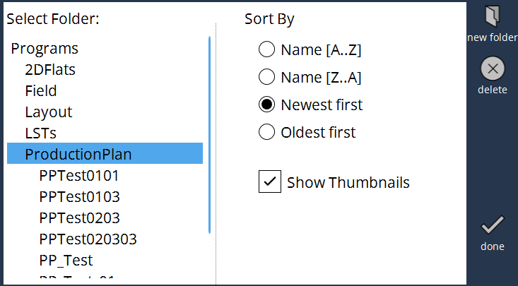

Flujo de trabajo
1. Añadir paquetes del plan de producción
Mientras la máquina está lista para la producción, pulse el botón "+" para añadir los programas de producción planificados a la lista de planes de producción.

En el procedimiento de adición, los paquetes del plan de producción también se almacenarán en la ruta del disco local.

En la carpeta Plan de producción, se almacenarán todos los paquetes de planes de producción importados.
Cada paquete de plan de producción crea una carpeta individual, para almacenar sus subtareas que se pueden cargar directamente en caso del procesamiento de una sola tarea.

2. Ajustar la cantidad, si es necesario
La cantidad objetivo de la subtarea se toma de la programación offline, y también se puede editar en la máquina mientras el plan de producción no está en modo de ejecución.Para cambiar las cantidades real y objetivo, se mostrará un teclado numérico: